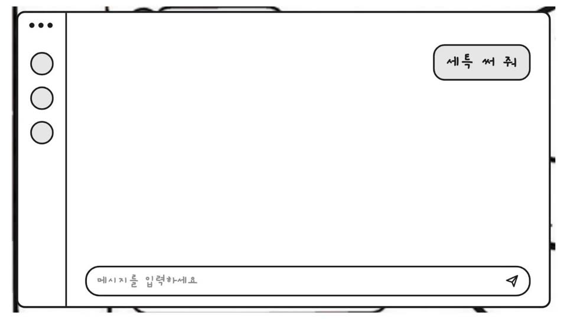
영상: 대문 → 제목 → 밤 책상 → 「세특 써 줘」
말 없음
Teacher B 음성이 인사와 자기소개를 합니다. 영상이 「세특 써 줘」에서 멈출 때까지 기다립니다.
강의 스토리보드 · 11. 27.(금) · 내 몫 40분 (슬라이드 약 13분 + 실습 27분) Teacher B

영상: 대문 → 제목 → 밤 책상 → 「세특 써 줘」
말 없음
Teacher B 음성이 인사와 자기소개를 합니다. 영상이 「세특 써 줘」에서 멈출 때까지 기다립니다.
「세특 써 줘」에서 멈춘 화면
방금 목소리, 제가 아닙니다
방금 목소리, 제가 아닙니다. AI입니다. 안녕하십니까, 이길봉입니다.
말로만 하면 안 믿으실 테니까, 시작 전에 AI한테 일 하나 시켜 놓고 가겠습니다.
Claude 새 대화
첫 문장 붙여 넣고 Enter
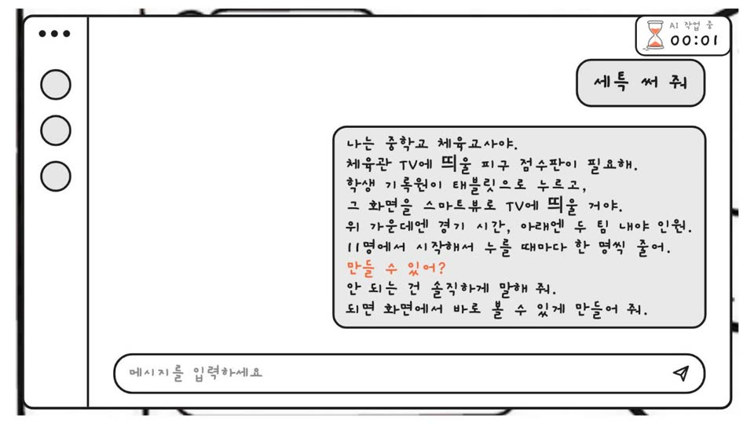
보낸 문장이 써지고 타이머 시작
되는지 먼저 물었습니다
체육관 TV에 띄울 피구 점수판입니다. 저는 되는지 먼저 묻고, 되면 만들어 달라고 했습니다.
이건 이따 보겠습니다.
바꾼 대사: 「만들어 줘라고 안 했습니다」 → 「되는지 먼저 묻고, 되면 만들어 달라고 했습니다」
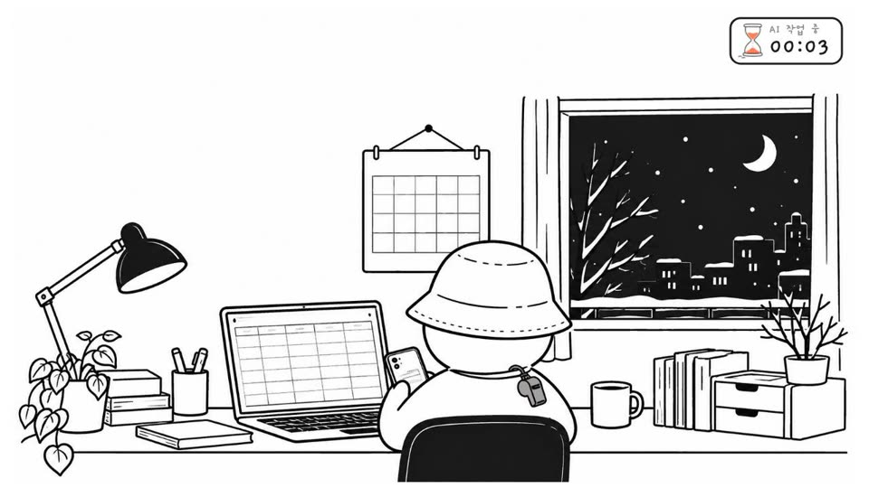
두들: 2월 밤, 엑셀과 휴대폰
시작은 수업이 아니었습니다
시작은 수업이 아니었습니다. 올해 2월, 신입생 반 편성을 발표해야 했어요.
학생들이 휴대폰으로 자기 반만 확인할 수 있게 하고 싶었습니다.
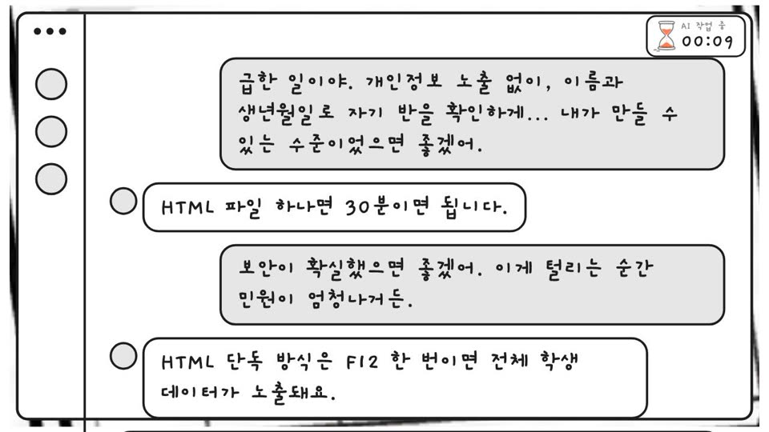
대화창 네 줄이 한 줄씩 (클릭 네 번)
제 한마디에 답이 바뀌었습니다
(화면의 대화를 한 줄씩 읽기)
AI는 처음에 "됩니다"라고 했습니다. 그런데 제 한마디에 답이 바뀌었어요.
저는 코딩은 몰랐지만, 반 편성 명단이 모두에게 공개되는 순간 무슨 일이 닥칠지는 알고 있었습니다. 누가 누구랑 같은 반인지까지 다 드러나면 학기가 시작되기도 전에 큰일이 납니다.
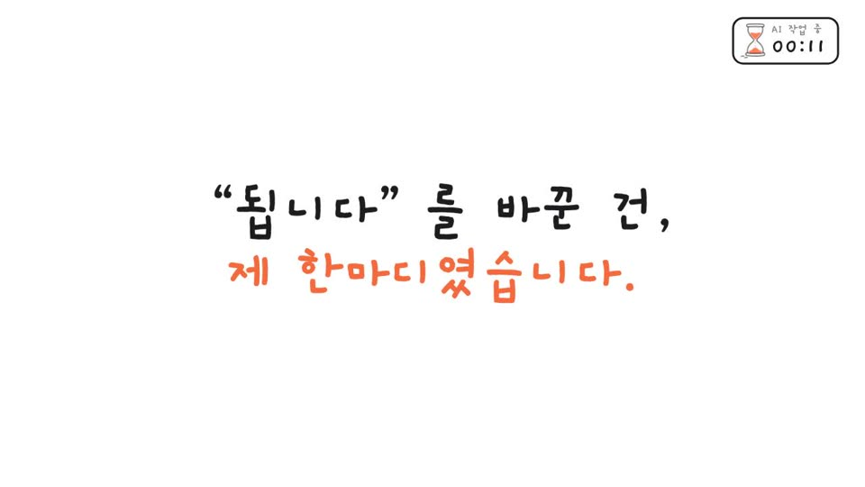
글자: "됩니다"를 바꾼 건, 제 한마디였습니다.
(멈춤)
읽지 않고 잠깐 멈춥니다.
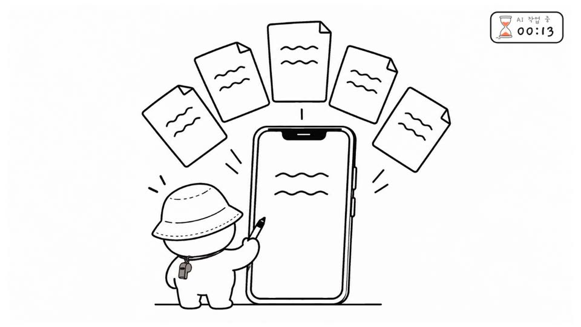
두들: 휴대폰 위로 안내장이 쌓임
방금 보신 그 안내장이 이겁니다
그 뒤로는 습관이 됐습니다. 행사가 생기면 "자, 또 하나 뚝딱 만들어 보자."
공감 프로젝트 안내, 학폭 설문 안내, 체육대회 안내… 방금 임대관 선생님 이야기에서 보신 그 안내장이 이겁니다.
넣은 대사: 앞 강의(임대관 선생님)와 잇는 한마디
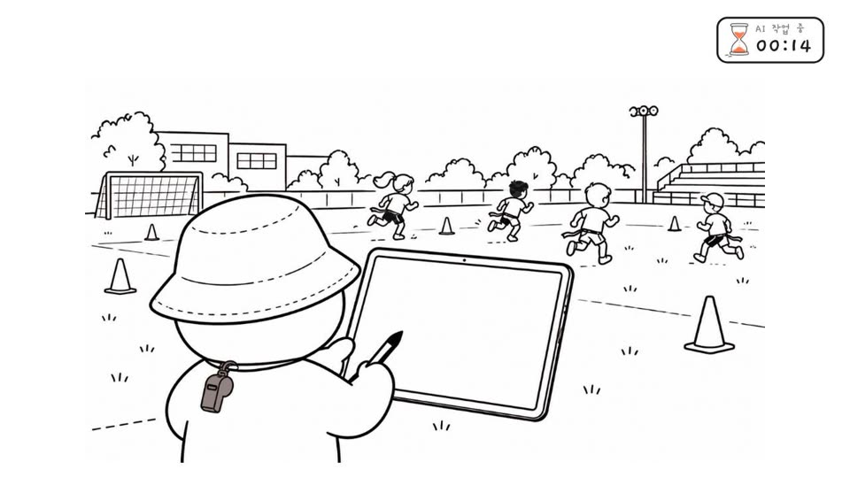
두들: 운동장, 태블릿에 펜
내 수업을 바꿔 보고 싶었습니다
1학기까지 AI로 만든 건 대부분 평가 도구였습니다. 학생이 휴대폰으로 수행평가를 확인하는 시스템, 교육과정 문서들.
그러다 한 번쯤 내 수업을 바꿔 보고 싶었습니다. 그래서 물었습니다.
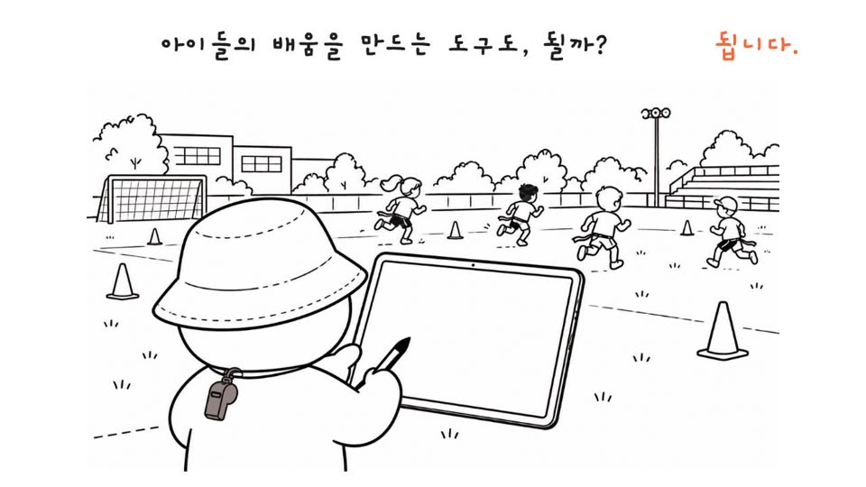
글자: 아이들의 배움을 만드는 도구도, 될까? → 됩니다.
이번에도 AI는… 됩니다
내 수업에서 아이들의 배움을 만드는 도구도 만들 수 있을까.
(클릭) 이번에도 AI는… "됩니다."
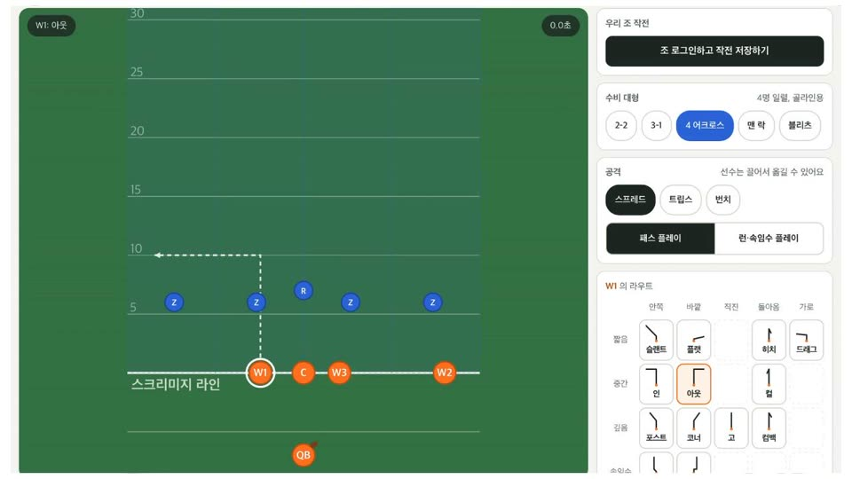
공간작전판 녹화 (40~60초)
이 버전이 나온 이유는 아이들입니다
수비 대형을 고르고, 라우트를 긋고, 실행하면 3D로 넘어가 QB 눈으로 던집니다.
이 버전이 나온 이유는 아이들입니다. 실제 경기에서 먹힌 작전이 판에서는 5야드도 못 가서 아이들이 속상해했거든요. 그래서 QB가 움직이게 고쳤습니다.
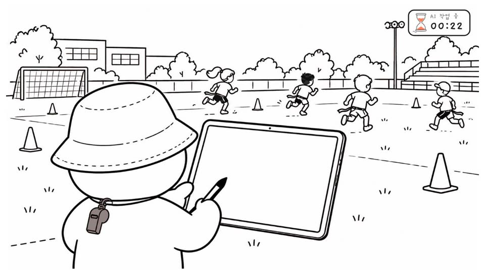
녹화가 두들 태블릿으로 돌아감
말 없음
화면이 돌아올 때까지 기다립니다.
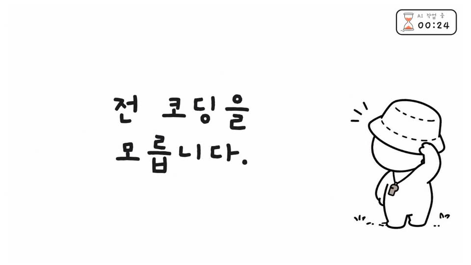
글자: 전 코딩을 모릅니다.
전 코딩을 모릅니다
이걸 누가 만들었을까요. 전 코딩을 모릅니다. 바이브코딩도 배운 적 없습니다.
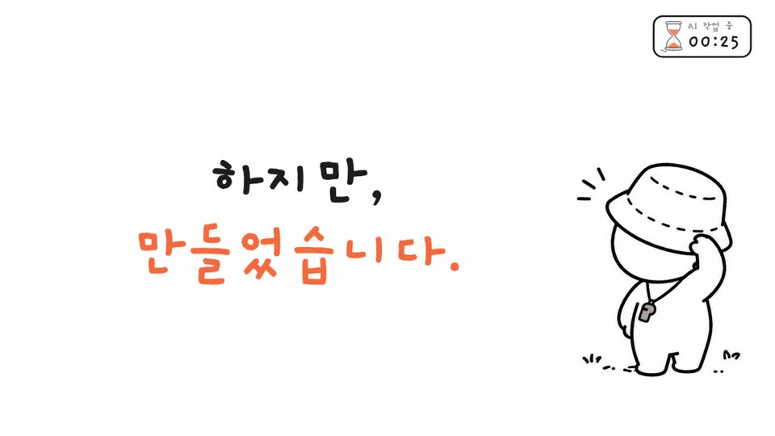
글자: 하지만, 만들었습니다.
(멈춤)
읽지 않고 잠깐 멈춥니다.
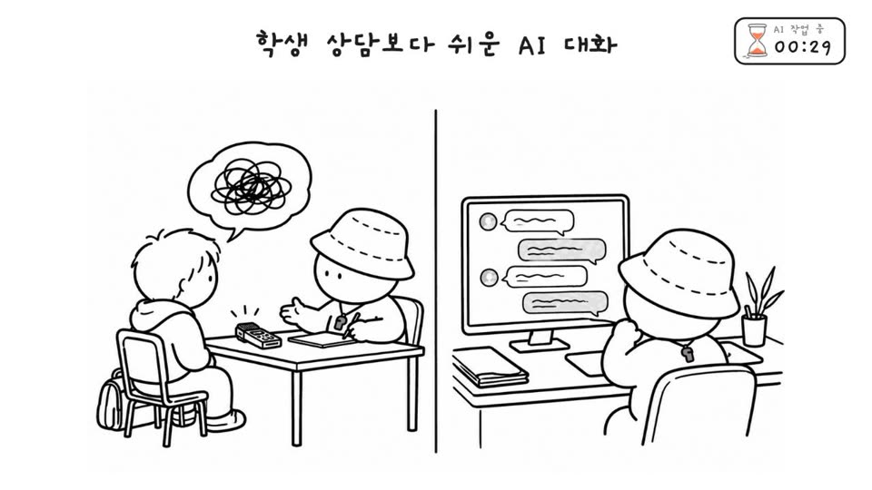
두들: 학생 상담 vs AI 대화 → 제목 글자
확인은 제 몫입니다
어떻게 만들었냐고요? 대화로 만들었습니다. 제목 기억하시죠.
학생 상담은 어렵습니다. 무섭게만 할 수도 없고, 달래기만 한다고 되는 것도 아니고요.
그런데 AI는 거짓말을 할지언정 "못 한다", "안 한다"는 말은 안 합니다. 말하면 바로 시작합니다. 그래서 확인은 제 몫입니다. 아까 그 F12처럼요.
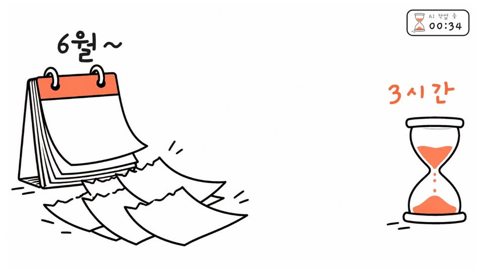
두들: 달력·모래시계 → 6월~ → 3시간
오래 걸린 건 저였습니다
그리고, 공간작전판은 6월부터 석 달 걸렸고 지금도 고치고 있습니다. 작전 설계도는 3시간이 안 걸렸습니다.
뚝딱 만드는 건 쉬워졌습니다. 오래 걸린 건 AI가 아니라 저였습니다.
1분 안에 지나가기. 화면 타이머가 10분을 넘었으면 이 장면은 클릭만 하고 건너뜁니다.
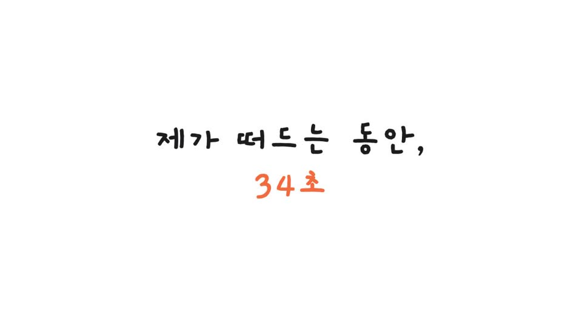
타이머가 멈추고 걸린 시간이 써짐
아까 시켜 놓은 거 보겠습니다
제가 떠드는 동안 AI는 만들고 있었습니다. 아까 시켜 놓은 거 보겠습니다.
Claude: ① 점수판 열기 → ② 보내기
청팀 홍팀, 전체화면
이게 첫 문장 하나로 나온 겁니다. 그런데 한 번에 끝나지 않습니다. 하나 고쳐 보겠습니다.
이것도 시켜 놓고 가겠습니다.
고치는 동안 기다리지 않습니다. 업무분장표 체험 시간이 곧 기다리는 시간입니다.
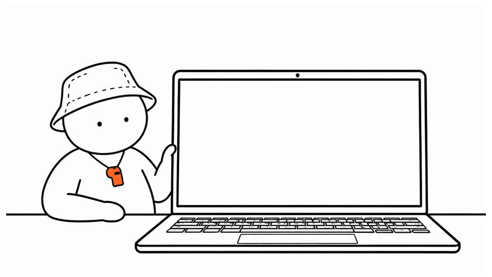
두들: 노트북을 펴는 캐릭터
제가 만든 걸 보시죠
제가 만든 걸 보시죠.
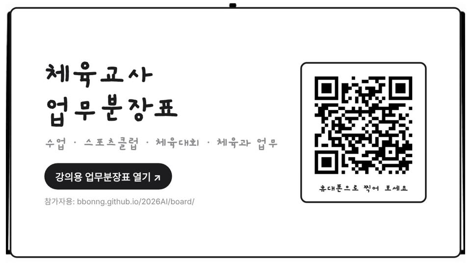
체육교사 업무분장표 + QR
칸을 하나씩 눌러 보세요
체육교사 업무분장표입니다. 수업, 스포츠클럽, 체육대회, 체육과 업무. 선생님들도 매년 하시는 일들이죠.
칸을 하나씩 눌러 보세요.
(체험 뒤) 1분만 더 보시고 넘어가겠습니다.
Claude: ② 결과 보기 → ③ 보내기
유니폼 색까지
보시는 동안 고쳐 놨습니다. 청팀 홍팀, 전체화면.
하나만 더 하겠습니다. 학생들이 유니폼을 입고 오면 그 색으로 보여 주고 싶습니다.
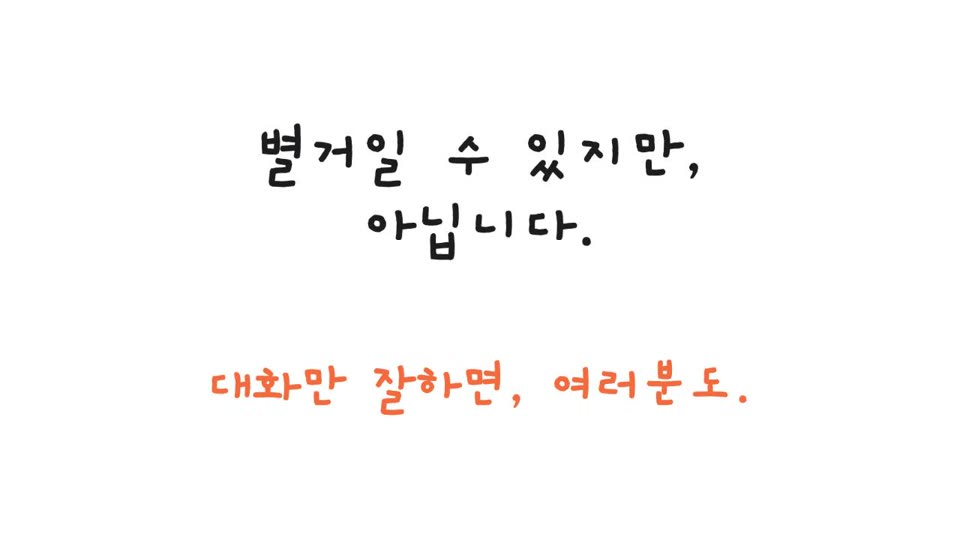
글자: 별거일 수 있지만, 아닙니다. → 대화만 잘하면, 여러분도.
대화만 잘하면 여러분도
이런 것도 만들었습니다. 별거일 수 있지만, 아닙니다.
(클릭) 대화만 잘하면 여러분도 됩니다.
Claude: ③ 결과 보기
부저 소리는 남겨 둡니다
색깔 들어왔습니다. 한 번에 나온 게 아닙니다. 이렇게 하나씩 말로 고친 겁니다.
부저 소리는 아직 없습니다. 이건 남겨 두겠습니다.
부저 소리는 일부러 남겨 둡니다. 마지막 정리에서 숙제로 다시 꺼냅니다.
참가자 화면: 각자 노트북·휴대폰의 AI
이제 선생님들 차례입니다
이제 선생님들 차례입니다. 제가 처음에 보낸 그 문장, 그대로 보내 보십시오.
(5분 뒤) 화면에 점수판 나오신 분? 그게 선생님이 만든 겁니다.
참가자가 직접 결과를 받아 보는 순간입니다. 여기까지 5분.
Claude: 주문받아 같이 만들기
뭘 만들어 볼까요?
뭘 만들어 볼까요? 시간 안에는 안 되겠지만 한번 해 보실까요?
화면 하나에서 끝나는 것으로 하나만 골라 주십시오.
(첫 문장을 같이 쓰기) 누가 쓰는지, 어디에 띄우는지, 무엇이 보여야 하는지.
(끊기) 시간 안에는 다 안 됩니다. 여기서부터가 집에서 하실 일입니다.
업무분장표에 B 쓰기 → 시크릿 화면
화면에 B를 써 보십시오
마지막으로 선물 하나 드리겠습니다. 아까 그 업무분장표 화면에 손가락으로 B를 써 보십시오.
안내장 장면 하나만 같이 보겠습니다. 나머지는 집에서 보십시오.
시크릿 화면 그대로
집에서 이거 보고 한번 해 보십시오
시간이 짧았습니다. 집에서 이거 보고 한번 해 보십시오.
아까 점수판에 부저 소리가 없었죠. 그건 선생님들이 넣어 보십시오. AI도 틀립니다. 이상하면 다시 물으시면 됩니다.
맨 아래에 돌아가는 길에 읽으실 글도 하나 넣어 두었습니다. 고맙습니다.